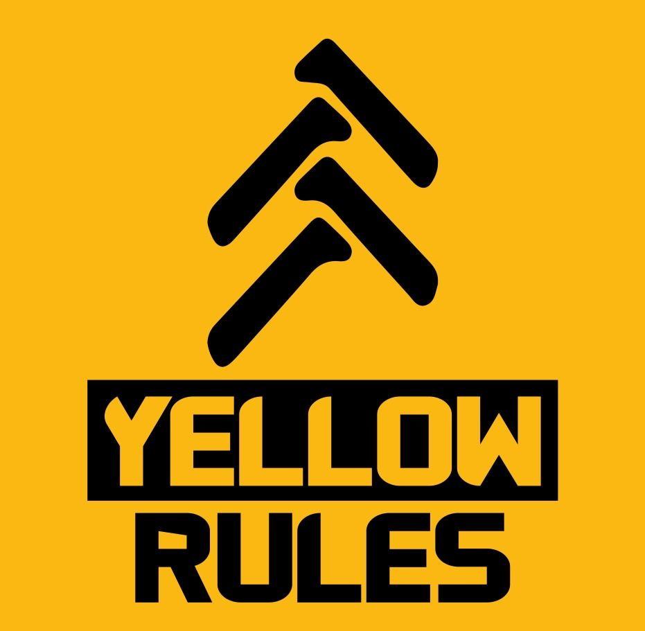
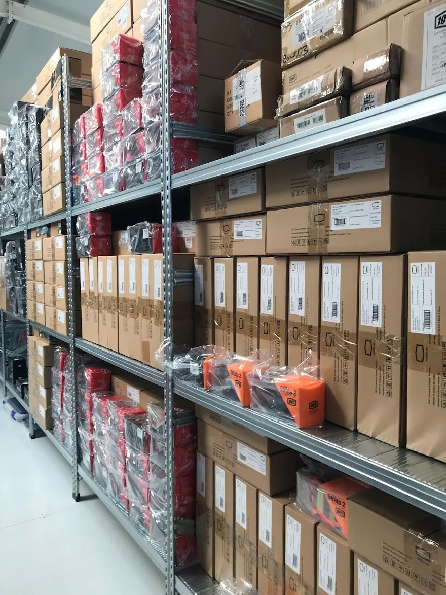
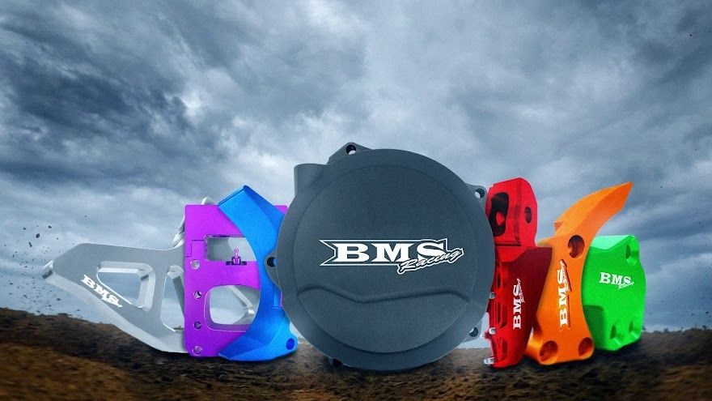
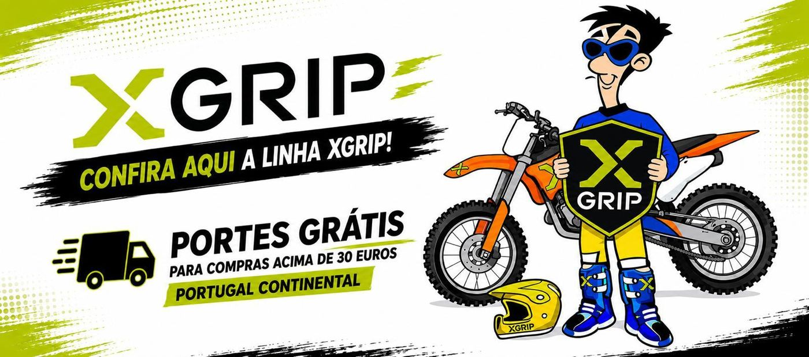
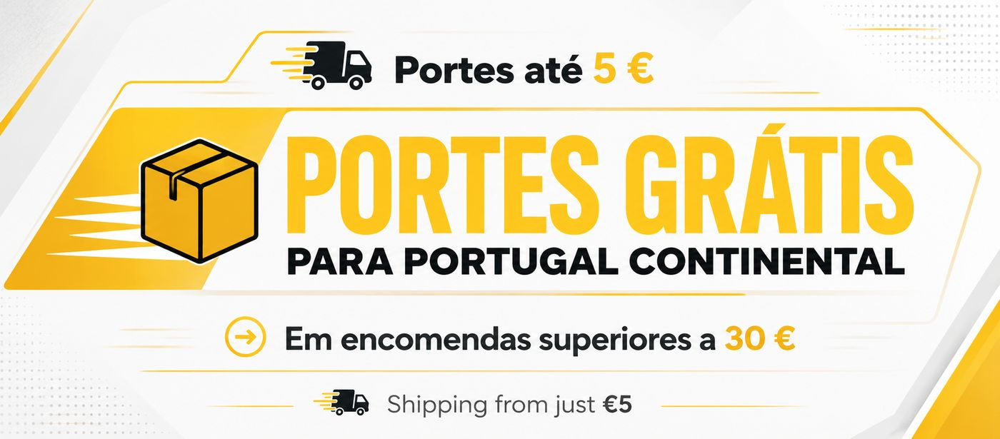

Jeca na loja
As visitas aos lojistas viram vídeo: publicidade para quem revende e motivo para comprar mais à Yellow Rules.
Para o Renato e a Michelle Furmann. A Yellow Rules já tem o mais difícil: experiência, marcas fortes e um rosto que as pessoas querem ver. A Usina Vídeos junta-lhe produção profissional e regularidade, para gerar mais vendas na 2r4.eu, mais lojistas e mais autoridade para o Jeca Joia.
Rascunho para a primeira conversa
A nossa proposta é somar a este trabalho: transformar o dia a dia do Renato (testes, visitas a lojistas, provas) em ainda mais conteúdo, publicado todas as semanas e sempre com um caminho para a venda.



Uma vez por mês vamos a Viana do Castelo e gravamos tudo numa sessão: teste de produto, visita a um lojista, dicas e fotografias. Depois editamos e entregamos o mês pronto a publicar.
| Semana | Destaque | Reels |
|---|---|---|
| Semana 1 | Vídeo no YouTube: teste de produto | Corte vertical do teste · Bastidores da gravação |
| Semana 2 | Jeca na loja: visita a um lojista | Reel da visita · Produto em 30 s |
| Semana 3 | Dica de montagem ou manutenção | Reel da dica · Humor do Jeca |
| Semana 4 | Produto em destaque do mês | Reel do produto · Convite para o próximo mês |
Exemplo de um mês no pacote Mensal. Os temas escolhem-se convosco, de acordo com as marcas e as campanhas de cada mês.
As visitas aos lojistas viram vídeo: publicidade para quem revende e motivo para comprar mais à Yellow Rules.
Um código de desconto da 2r4.eu em cada vídeo (ex.: JECA10). Mede quanto cada conteúdo vende.
Cada vídeo e cada Reel levam à página do produto na 2r4.eu, sem passos a mais.
Os Reels que funcionam melhor passam a anúncio para motociclistas off-road em Portugal e Espanha, com legendas em espanhol.
Um vídeo curto por marca para enviar por WhatsApp aos lojistas.
Tutoriais de montagem e «erros comuns»: vídeos que se pesquisam e vendem durante anos.
Sempre a mesma fórmula: problema, produto, teste no terreno e veredito.
Produtos e marcas lado a lado, com o olhar de quem pilota.
Da maior revista off-road do Brasil a importador em Portugal: um episódio e um texto para o site.
Cobertura com drone e entrevistas nas provas onde o Renato já está.
Episódio conjunto e divulgação cruzada com o canal de jornalismo automóvel da Usina, desde 2002.
A gestão das redes continua com quem conhece a marca e a comunidade. A Usina entrega os vídeos editados em todos os formatos, as fotografias, o calendário e os textos de cada publicação. Se for útil, também podemos publicar e gerir os anúncios.
Uma reportagem em estilo vlog, natural e espontânea como o Jeca Joia, a contar a história da empresa: da Revista Pró Moto ao armazém em Viana do Castelo, as marcas, os pilotos e as ações em Portugal. Publicada no YouTube e no site do Motores e Ação e no blog da Usina.
Acompanhamos o Renato nas visitas a empresas e lojistas e nos eventos, a gravar os bastidores tal como acontecem. Episódios curtos, espontâneos, que mostram as marcas a chegar às pessoas e reforçam a proximidade com os parceiros.
Cada conteúdo produzido em conjunto chega também ao público da Usina Vídeos e do Motores e Ação.
A Yellow Rules nos trabalhos do site e um artigo no blog sobre o Jeca Joia e a história da marca.
Divulgação cruzada no site, no Instagram e no YouTube do Motores e Ação, com público de motores desde 2002.
Bastidores das gravações em Viana no @usina.videos, com marcação das contas da Yellow Rules e das marcas.
Os casos e os resultados partilhados no LinkedIn de Freire Neto, para lojistas e parceiros profissionais.
Com o vosso acesso, podemos manter o yellowrules.com e a 2r4.eu atualizados: banners das campanhas, novidades das marcas, vídeos nas fichas de produto e páginas em português e espanhol. Quem visita a loja vê o produto a funcionar antes de comprar.

Conhecemos o mercado do Norte e estamos na estrada todas as semanas. Podemos ajudar a levar as marcas da Yellow Rules a mais pontos de venda, em condições a combinar.
Apresentar as marcas da Yellow Rules a lojas, oficinas e clubes da região, com catálogo e vídeos.
Presença conjunta em provas, encontros e feiras, a produzir conteúdo e a gerar contactos.
Apoio em entregas, amostras e material de ponto de venda quando for útil.
Ligação a marcas, stands e clubes com quem a Usina e o Motores e Ação já trabalham.
Primeiro ouvimos o que a Yellow Rules precisa; depois fechamos um valor fixo por mês, sem fidelização longa. Ao fim de 3 meses avaliamos os resultados juntos.
Presença semanal nas redes, com custo baixo e fixo.
YouTube todos os meses e Reels duas vezes por semana.
Acrescenta-se quando os resultados o justificarem.
A Usina Vídeos foi criada em 2002 por Freire Neto, jornalista desde 1997 e fundador do Motores e Ação, canal de jornalismo automóvel com mais de 115 mil inscritos no YouTube. Sandra Freire assegura a edição, a produção e a administração, com 20 anos de televisão e produtoras.